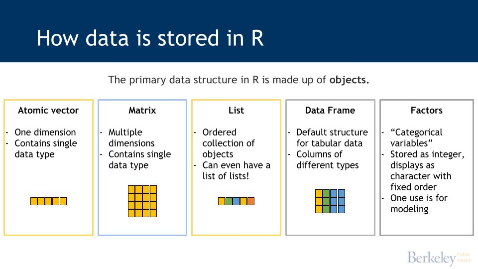

x <- TRUE
x[1] TRUEData types
Logical
Character/string
Numeric
Special forms
Dates
Factors
Objects
Vectors
Lists
We’ll focus on 4 main types:
| Data Type | Description |
|---|---|
| Logical | True / False |
| Character | Alphabetic, special characters (!@#$%^&*, etc.), designated between ” ” (single quotes also work, but it’s better to leave them for situations when a quoted work exists within a string (e.g. “This is ‘useful’ information”) |
| Numeric (Integer) | Whole numbers between -2,147,483,647 and + 2,147,483,647 (designated in code with the letter L) |
| Numeric (Double) | Whole, decimal, or scientific notation - most numbers in R are converted to double |
To assign an object as a logical value use either TRUE or FALSE or T or F.
x <- TRUE
x[1] TRUEy <- T
y[1] TRUETrue and False aren’t recognized.
z <- FalseError in eval(expr, envir, enclos): object 'False' not foundAny expression comparison in R is effectively a function that returns a logical value.
7 == 14[1] FALSE7!= 14[1] TRUE7L == as.double(7) #integer compared to a double[1] TRUE0 == 0.0000000000000000000000000001[1] FALSE"Good" == "Bad"[1] FALSEComparing a vector to another vector (or list to another list) returns a vector of logical values. This kind of evaluation can get very useful later on!
c(1, 2, 5, 7, 9) == c(1, 2, 2, 9, 6)[1] TRUE TRUE FALSE FALSE FALSECharacter data type (aka strings, text) in R include letters, symbols, and can even be numbers.
To create an object as a character you surround the text in “quotes” as follows:
this_char <- "apple"
this_char[1] "apple"Can include any characters:
another <- "apple123!@#"
another[1] "apple123!@#"Can also convert from other data types:
numbers <- as.character(1:10)
numbers [1] "1" "2" "3" "4" "5" "6" "7" "8" "9" "10"Be careful though – if you convert numbers to characters, you’ll get odd results when sorted.
sort(numbers) [1] "1" "10" "2" "3" "4" "5" "6" "7" "8" "9" There are lots of ways to manipulate strings and lots of reasons why you might want to. Here’s a few examples of key functions. A few of these functions are part of the stringr package, which is in the tidyverse. There’s a nice cheatsheet for the stringr functions as well.
| Function(x = string) | Package | Description | Example |
|---|---|---|---|
substr(x, start, end) |
Base R | Pull out a key suffix, prefix, or something in between | substr(“sem1_grade”, 1, 4) == “sem1” |
gsub(pattern, replacement, x) |
Base R | Replace some portion of the string |
|
str_to_upper(x)str_to_lower(x)str_to_title(x) |
stringr | Convert to all lower, all UPPER, or Title Case. Really helpful when trying to join datasets by strings |
|
str_detect(x, pattern) |
stringr | Returns a logical depending on whether the pattern exists in the string |
|
library(stringr)
substr("sem1_grade", 1, 4)[1] "sem1"gsub("sem1_", "", "sem1_grade") [1] "grade"gsub("-", "_", "field-name") [1] "field_name"str_to_upper("try_this") [1] "TRY_THIS"str_to_lower("tbl_YELLING")[1] "tbl_yelling"str_to_title("ALAMEDA CO") [1] "Alameda Co"clothes <- c("tie", "shirt", "dress")
str_detect(clothes, "e") [1] TRUE FALSE TRUEComputers can store and retrieve numbers more efficiently than we can. There are two main types of numbers in R. For the most part, the differences don’t matter a whole lot as R will convert types to match what is needed.
However, it’s still good to know the difference.
Integer - Take up less memory and can sometimes be preferred for indexing and iterating through a sequence.
Double - Are best for calculations and displaying results.
Dates are a special form of numeric that are stored as numeric but display in formats we’re familiar with. Similar to how Microsoft (1/1/1990) and SAS (1/1/1960) anchor their dates, R anchors to a specific date (1/1/1970).
Dates are stored as the number of days before or after 1/1/1970
Date/times are stored as the number of seconds before or after 1/1/1970
The default display format in R is yyyy-mm-dd (e.g. 2020-09-17).
Let’s walk through some examples of dates, starting with a base R function Sys.Date() that returns the current date and Sys.time() which returns the current date AND time.
Sys.Date()[1] "2023-08-14"Sys.time()[1] "2023-08-14 17:50:16 PDT"We’re going to use the tidyverse’s lubridate package to work with dates. There’s a huge selection of useful functions. We’ll cover a few!
library(lubridate)We can read in different types of date formats using any variation of year, month, day functions: ymd(), ydm(), mdy()…you get the idea! These functions will return the standard yyyy-mm-dd format by parsing the strings you provide.
ymd("1865/06/19")[1] "1865-06-19"mdy("July 20, 1969")[1] "1969-07-20"dmy("8/03/1917")[1] "1917-03-08"With R, we can easily manipulate time.
# 90 days from today
Sys.Date() + 90[1] "2023-11-12"# 100 days ago
Sys.Date() - 100[1] "2023-05-06"# 12 miliseconds into the future
Sys.time() + 12 / 1000[1] "2023-08-14 17:50:16 PDT"But what if we want to modify based on a window of time, such as a day, month, or year? Not every month has the same number of days and writing out 365 each time for a year can get messy. Using lubridate functions we can more clearly calculate these time frames.
# 3 days later
Sys.Date() + days(3)[1] "2023-08-17"# 5 months before
Sys.Date() - months(5)[1] "2023-03-14"# 2 years later
Sys.Date() + years(2)[1] "2025-08-14"We can also extract date info easily too.
# grab the day from a date
day(Sys.Date())[1] 14wday(Sys.Date(), label = TRUE, abbr = TRUE)[1] Mon
Levels: Sun < Mon < Tue < Wed < Thu < Fri < Sat# grab the month from a date
month(Sys.Date())[1] 8# grab the year from a date
year(Sys.Date())[1] 2023Super useful for future epidemiologists is determining the epiweek!
epiweek(Sys.Date())[1] 33Dates are very useful tools to help organize data.
df <- data.frame(date = c("1917-03-08", "1969-07-20", "1865-06-19"))
# max date
max(df$date)[1] "1969-07-20"# min date
min(df$date)[1] "1865-06-19"# ordering by dates
sort(df$date)[1] "1865-06-19" "1917-03-08" "1969-07-20"Factors are another special form of numeric that are stored as numeric but display as text strings. In the past, factors efficiently stored character strings as integers, saving memory. Recent versions of R automatically convert character data to factors behind the scenes when needed, allowing us to not worry about memory.
Factors can be useful and even necessary in specific situations:
Certain analytic packages require factors
Labeling axes in visualizations
For the most part, the benefits outweigh the drawbacks of factors. For example, if you think you’re operating with a character field but it’s actually a factor, you might have difficulty debugging.
x <- factor(c("apple", "orange", "apricot", "apple"),
levels = c("apple", "orange", "apricot"))
x[1] apple orange apricot apple
Levels: apple orange apricotas.numeric(x)[1] 1 2 3 1
Vectors are one dimension and a single data type. We can create vectors with the c() function.
c(2, 3, 4, 5, 6, 45, 2)[1] 2 3 4 5 6 45 2Or create a range of numeric values using start:end.
1:10 [1] 1 2 3 4 5 6 7 8 9 10Or a sequence with seq().
# every 2 numbers up to 10
seq(2, 10, 2)[1] 2 4 6 8 10We can also put string’s in vectors, but if we combine numeric and strings together the numeric values are converted into strings. This occurs because R requires vectors to be of one type.
c(1, 2, 3, "I am a string")[1] "1" "2" "3" "I am a string"Using vectors, we can create columns in data frames.
testing_pos <- data.frame(
county = c("Alameda", "Contra Costa", "Marin"),
total_tests = c(500, 745, 832),
pos_tests = c(43, 32, 30)
)We also have the ability to compare vectors to each other to find matches using the %in% operator.
# two list of counties
v_county <- testing_pos$county
county_list <- c("San Diego", "Marin")
# let's see how many counties in v_county are in county_list
v_county %in% county_list[1] FALSE FALSE TRUEVector also can be named.
named_v <- c("day1" = "Monday", "day2" = "Tuesday", "day3" = "Wednesday" )
named_v day1 day2 day3
"Monday" "Tuesday" "Wednesday" There are a few ways to index a vector:
integers (positive or negative)
logical vectors
character vectors / names
which()
vec <- seq(0, 50, by = 5)
vec [1] 0 5 10 15 20 25 30 35 40 45 50# grab the 5th element using [brackets]
vec[5][1] 20# elements 3, 6, 9
vec[c(3, 6, 9)][1] 10 25 40# all elements except 3, 6, 9
vec[c(-3, -6, -9)][1] 0 5 15 20 30 35 45 50# all elements except 5, 6, 7
vec[-5:-7][1] 0 5 10 15 35 40 45 50vec <- 5:10
vec[1] 5 6 7 8 9 10# keep only TRUE indexes
vec[c(FALSE, TRUE, FALSE, TRUE, FALSE, FALSE)][1] 6 8# by condition
vec[vec > 7][1] 8 9 10named_v <- c("day1" = "Monday", "day2" = "Tuesday", "day3" = "Wednesday" )
named_v day1 day2 day3
"Monday" "Tuesday" "Wednesday" # see names of elements
names(named_v)[1] "day1" "day2" "day3"# index by name
named_v["day1"] day1
"Monday" # index by multiple names
named_v[c("day1", "day2")] day1 day2
"Monday" "Tuesday" vec <- 95:110
vec [1] 95 96 97 98 99 100 101 102 103 104 105 106 107 108 109 110# find position of values that match the condition
which(vec > 99) [1] 6 7 8 9 10 11 12 13 14 15 16# return the elements that match the indexes
vec[which(vec > 99)] [1] 100 101 102 103 104 105 106 107 108 109 110We have a few ways to modify vectors too:
Change element
Delete
Combine vectors
Calculate
# create multiple vectors to use below
v1 <- c(2,7,3,21,98)
v2 <- 1:5
v3 <- c("a","b","c","d","e")
v4 <- c(1,3)# change an element
v1[5] <- 94
v1[1] 2 7 3 21 94# add an element
v1[6] <- NA
v1[1] 2 7 3 21 94 NA# delete an element
v1[-6][1] 2 7 3 21 94# or
v1[1:5][1] 2 7 3 21 94# clear vector values
# create vector to delete
test <- v1
# clear values from vector
test <- NULL# combine vectors
# same type
v1_2 <- c(v1,v2)
v1_2 [1] 2 7 3 21 94 NA 1 2 3 4 5# numeric and character, combine to character
v1_3 <- c(v1,v3)
v1_3 [1] "2" "7" "3" "21" "94" NA "a" "b" "c" "d" "e" # adding vectors of different lengths will work - the short vector values will be recycled to
# align with length of longer vector
v1+v4[1] 3 10 4 24 95 NA# subtract
v1-v2Warning in v1 - v2: longer object length is not a multiple of shorter object
length[1] 1 5 0 17 89 NA# multiply
v1*v2Warning in v1 * v2: longer object length is not a multiple of shorter object
length[1] 2 14 9 84 470 NA# absolute value
v_abs <- c(-1,-4,3,7)
abs(v_abs)[1] 1 4 3 7List are ordered collections of objects
One object
Multiple objects
Or even a list within a list (nested lists)
Let’s create our first list.
list1 <- list("dog",375)
list1[[1]]
[1] "dog"
[[2]]
[1] 375We can go further by naming the list.
named_list <- list(pet="dog",number=375)
named_list$pet
[1] "dog"
$number
[1] 375With lists, we can mix up data types: data frames, character vectors, matrix, another list.
testing_pos <- data.frame(
county = c("Alameda", "Contra Costa", "Marin"),
total_tests = c(500, 745, 832),
pos_tests = c(43, 32, 30)
)
named_v <- c("day1" = "Monday", "day2" = "Tuesday", "day3" = "Wednesday" )
list1 <- list("dog",375)
# data frame, named vector, list
big_list <- list(testing_pos, named_v, list1)
str(big_list)List of 3
$ :'data.frame': 3 obs. of 3 variables:
..$ county : chr [1:3] "Alameda" "Contra Costa" "Marin"
..$ total_tests: num [1:3] 500 745 832
..$ pos_tests : num [1:3] 43 32 30
$ : Named chr [1:3] "Monday" "Tuesday" "Wednesday"
..- attr(*, "names")= chr [1:3] "day1" "day2" "day3"
$ :List of 2
..$ : chr "dog"
..$ : num 375# character vector, matrix, list
multi_list <- list(
"Weekend" = c("Sat","Sun"),
matrix(c(3,9,6,12,-3,21), nrow = 2),
list("dog",375))
str(multi_list)List of 3
$ Weekend: chr [1:2] "Sat" "Sun"
$ : num [1:2, 1:3] 3 9 6 12 -3 21
$ :List of 2
..$ : chr "dog"
..$ : num 375Indexing lists is similar to indexing vectors.
named_list <- list(pet="dog", number=375)
# index list
named_list$pet[1] "dog"# compare single brackets
named_list[2]$number
[1] 375# to double brackets
named_list[[2]][1] 375# can also return just names
names(named_list[1])[1] "pet"# indexing in list of list
multi_list[1]$Weekend
[1] "Sat" "Sun"multi_list["Weekend"]$Weekend
[1] "Sat" "Sun"multi_list$Weekend[1] "Sat" "Sun"multi_list[2][[1]]
[,1] [,2] [,3]
[1,] 3 6 -3
[2,] 9 12 21multi_list[3][[1]]
[[1]][[1]]
[1] "dog"
[[1]][[2]]
[1] 375multi_list[3][[1]][2][[1]]
[1] 375We can also modify list, very similar to how we modify vectors.
# replace element
multi_list[3][[1]][1] <- "cat"
multi_list[3][[1]][1][[1]]
[1] "cat"multi_list[3][[1]]
[[1]][[1]]
[1] "cat"
[[1]][[2]]
[1] 375# add new element
multi_list[3][[1]][3] <- "mouse"
multi_list[3][[1]][[1]]
[1] "cat"
[[2]]
[1] 375
[[3]]
[1] "mouse"multi_list[4] <- "new"
multi_list$Weekend
[1] "Sat" "Sun"
[[2]]
[,1] [,2] [,3]
[1,] 3 6 -3
[2,] 9 12 21
[[3]]
[[3]][[1]]
[1] "cat"
[[3]][[2]]
[1] 375
[[3]][[3]]
[1] "mouse"
[[4]]
[1] "new"# remove the last element.
multi_list[4] <- NULLIf you need to convert a list to a vector, you can use unlist().
list_a <- list(2,4,6,8)
list_b <- list(1,2,3,4)
vec_a <- unlist(list_a)
vec_b <- unlist(list_b)
vec_a + vec_b[1] 3 6 9 12